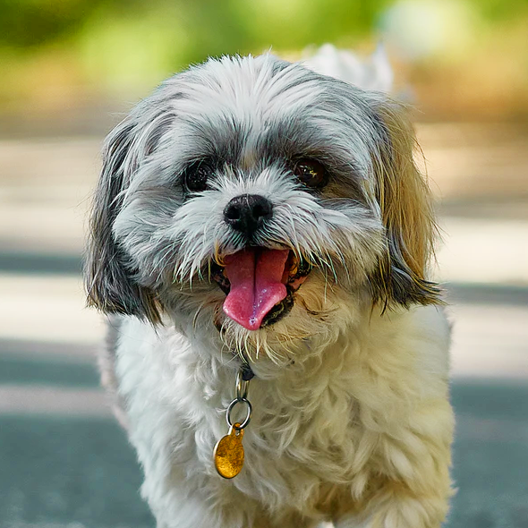

Layla
Raça: Yorkshire
Extremamente apegados aos membros de sua família, os yorkies são excelentes cachorros de companhia. Adoram nadar e são ativos e brincalhões. Podem ser um pouco teimosos e estranhar a presença de desconhecidos, mostrando-se protetores muitas vezes. Mas por serem muito fiéis e inteligentes, são fáceis de adestrar. Podem latir bastante, principalmente se desconfiarem que seu tutor favorito corre algum perigo.

Thor
Bingo
Raça: Shih-tzu
Dócil, amigável e companheiro: são três características que descrevem muito bem o temperamento de um Shih Tzu. Eles se apegam aos seus humanos logo nos primeiros dias de convivência. Assim como a maioria dos outros cachorros, na fase de troca de dentes podem roer coisas erradas, então, brinquedos mordedores são os melhores aliados para estas épocas e ótimas alternativas para que eles não escolham outros objetos. Eles costumam receber bem as visitas e também outros animais. Mas para que isso seja sempre uma realidade, o ideal é habituar seu pet desde filhote a pessoas e outros bichinhos.
Ducke
Raça: Salsicha
Toda a fama e popularidade que os Salsichas possuem pode estar ligado com a dócil personalidade dos cachorros dessa raça. Donos de um temperamento extremamente equilibrado, eles também são muito amigáveis e apaixonados por seus tutores.
E esse temperamento pode explicar porque é tão difícil ver um salsichinha nervoso ou agressivo. Além de se divertir com seus tutores, eles mantém as raízes de bom caçadores, e contam com um faro invejável.
Scooby
Raça: Jack Russell
O Jack Russell é um cãozinho de personalidade única. O seu espírito enérgico, sem dúvida, é sua marca registrada, além disso, ele sempre se mostra muito carinhoso e fiel aos seus tutores. Tudo que ele quer em troca é essa fidelidade e amor de volta.
Mas não tente deixá-lo o tempo inteiro em seu colo. Afinal, esses pets gostam mesmo é de correr e brincar com os seus tutores, e vão sempre querer gastar toda a energia deles ao lado de quem eles tanto amam.
Bob
Raça: Pug
Cachorro de companhia é o que melhor define o Pug. Eles são extremamente apegados aos seus tutores e muito sociáveis com todos. Apesar de às vezes serem preguiçosos e não gostarem tanto de atividades físicas, são bastante brincalhões e alegres. Amam ficar no colo! Assim como a maioria dos cachorros, precisa ser socializado desde filhote para que se dê bem com outros animais e crianças, por exemplo, mas os pugs, em geral, não costumam apresentar problemas comportamentais neste sentido. Por essas características, é um cachorrinho que se adapta bem em apartamentos e espaços menores, desde que estejam sempre frescos! Costumam receber a todos com muita receptividade e entusiasmo, mesmo aqueles que não conhecem bem.
Nina
Raça: Poodle
O temperamento de um Poodle é o grande responsável por sua popularidade. Eles são alegres, divertidos, aventureiros e muito fiéis as seus humanos. Apesar da raça possuir tamanhos distintos, a personalidade de todos é semelhante, exceto a do poodle gigante, que é mais calmo e menos latidor. No caso dos menores como o Anão e o Toy, eles podem desenvolver uma personalidade um pouco mais forte. Isso porque, devido ao tamanho, é muito comum tutores superprotegerem seus cães, deixando-os o tempo todo no colo e evitando a socialização. Devemos sempre ter em mente que cachorro é cachorro independentemente do tamanho e eles gostam de correr, pular, cheirar outros cachorros e por em prática seus instintos.
Meg
Raça: Pitbull
Assim como qualquer outro cachorro, a personalidade do animal e seu comportamento vão depender quase que inteiramente da forma como for criado e domesticado. O Pit Bull é uma raça muito, muito forte, por isso ele precisa de um cuidado extra na hora de ser adestrado, já que qualquer atitude que o animal tiver terá um impacto maior, devido à sua força. O Pit Bull é um cão de companhia e melhor amigo como qualquer outro cãozinho. Eles são dóceis e amáveis com seus tutores e até mesmo com estranhos. É da responsabilidade de quem tem um cachorro Pit Bull saber criá-lo da melhor forma, a fim de que o cão entenda os limites de sua força. A socialização, por exemplo, deve ser feita desde filhote. O estímulo positivo quando seu Pit Bull agir de forma mais delicada e for cortês com os outros, vai garantir um animal que só terá amor para dar.
Cacau
Raça: Pinscher
A fama do temperamento do Pinscher não é das melhores, mas isso não passa de uma ideia errada sobre esses cãezinhos. Acontece que eles possuem uma personalidade forte dentro de um corpinho minúsculo. Na verdade eles são muito ativos, brincalhões e amorosos. Mas acima de tudo isso, são cães muito territorialistas e protetores. Sendo assim, a qualquer sinal (qualquer sinal mesmo) de alguma coisa fora do comum, eles latem, avançam e tentam proteger seus tutores a qualquer custo. Até se dão bem com crianças, mas não têm muita paciência com elas, sem contar que é meio arriscado deixá-los com crianças menores, já que o Pinscher é muito pequeno e sensível e uma brincadeira mais bruta pode acabar machucando. Quando socializados desde cedo, se dão muito bem com outros animais.

Dalila
Raça: Pastor Alemão
Quem conhece um cachorro Pastor Alemão com certeza vai se apaixonar. Eles são cães exemplares. Extremamente fiéis (uma de suas principais características), inteligentes, ativos, protetores, carinhosos, obedientes, elegantes, corajosos, curiosos e, claro, super fofos! Stephantiz foi muito cuidadoso ao criar uma raça tão completa. Porém, antes de qualquer característica e a frente de qualquer denominação de raça eles são cachorros e como bons peludos sua personalidade vai depender muito da forma como for criado pela sua família. Apesar de ser fiel e carinhoso, o Pastor Alemão é uma raça grande e muito defensora, por isso é importante iniciar o adestramento desde cedo para que o cão desenvolva um temperamento equilibrado. Mantê-los sempre ativos com brincadeiras e atividades físicas é imprescindível para que eles não fiquem entediados e não se tornem destruidores.
Laika
Raça: Labrador
O labrador costuma ser um grande amigo de todos. Embora possam existir divergências quanto ao temperamento de alguns exemplares, o esperado é que eles sejam bem receptivos inclusive com aqueles que não conhecem. Sempre prontos para uma brincadeira, os labradores amam interagir com pessoas. Eles também se dão muito bem com outros animais quando devidamente socializados desde filhotes. Brincadeiras na água costumam ser suas favoritas - já que isso os remete às funções iniciais da raça.
Billie
Raça: Husky Siberiano
Apesar da cara de bravo, os Huskys podem ser sociáveis com outros cães e até mesmo com crianças, desde que acostumados com elas desde filhotes. Muito brincalhões e independentes, eles são também cãezinhos bem teimosos. Sua origem faz com que exercícios físicos sejam imprescindíveis para esses animais, não apenas pela saúde, mas porque eles realmente amam se exercitar! Estão sempre em alerta e, mais do que latir, são cachorros que adoram uivar. São animais orgulhosos e precisam de alguns limites ou realmente se sentirão os donos da casa. São exímios caçadores e sua personalidade independente é um gatilho para que eles fujam em busca de uma boa caça ou aventura.
Paçoca
Raça: Golden Retriever
O Golden Retriever é conhecido como um dos cachorros mais dóceis e companheiros que existe na atualidade. Ele é conhecido por ser naturalmente devoto à família, sempre gostando de agradar àqueles que ama. É um cachorro também muito agitado, que demanda exercícios físicos e mentais diariamente, adora brincar e se dá muito bem com crianças e outros cachorros. Seu jeito um pouco brincalhão demais pode, porém, não agradar a todos, fazendo com que os goldens se metam em algumas confusões por conta disso. De qualquer forma, socializar o pet desde filhote é fundamental para que ele seja assim sempre tão receptivo, caso contrário, ele poderá ser protetor demais e não gostar quando outros animais se aproximam de seus pais humanos.
Bartolomeu
Raça: Doberman
O doberman costuma ser leal aos seus humanos, mas muito alerta, vigilante e reservado com estranhos. Quando socializado, ele se dá bem com outros animais, mas isso deve ser feito desde novinho. É uma raça que costuma escolher um tutor como favorito e ser mais devoto a ele. Gosta de proteger sua família e seu território e não mede esforços para isso. Os primeiros dobermans da história eram cães de guarda de um cobrador de impostos que levava os animais com ele para desencorajar ladrões e conseguir chegar de forma mais enfática nos devedores. Essa apresentação imponente e poderosa pode ser notada até os dias de hoje nos exemplares da raça, que costumam colocar medo em quem não os conhece.
Diana
Raça: Dálmata
Eles são animais amorosos com sua família, leais àqueles que gosta, um tanto tímidos e muito, muito ativos. Uma família de atletas deveria com certeza considerar ter um Dálmata já que ele é o melhor companheiro que se pode pedir para praticar corridas, para nadar, escalar etc. São cães inquietos em sua maioria, podem ser desconfiados com estranhos, agindo até mesmo de forma agressiva em alguns casos. Eles se dão muito bem com crianças, mas não toleram bem aqueles puxões típicos de bebês, por isso são indicados para o convívio com crianças um pouco maiores, já que eles poderão correr e brincar a vontade sem que seus limites sejam invadidos. Não são de latir à toa, mas usam esse recurso para avisar sobre alguma coisa estranha ou para se comunicar com o tutor. O treinamento precoce vai garantir que esse latido seja controlado e utilizado quando necessário e não para apenas chamar atenção.
Tereza
Raça: Chihuahua
O chihuahua costuma se dar bem com pessoas e outros animais, mas é preciso cuidado nas brincadeiras, pois por seu tamanho reduzido, ele pode se machucar com facilidade. Bem apegado aos seus humanos, ele pode em alguns casos se mostrar muito protetor e um tanto quanto reservado com estranhos. Quando com medo, ele pode atacar por insegurança - fique atento aos sinais! Valente por si só, o chihuahua também pode se meter em encrenca por não temer nada e nem ninguém. Evite conflitos que possam colocar sua saúde e integridade física em risco.
Luna
Raça: Buldogue
Diferentemente do que sua aparência pode passar, os Buldogues Ingleses costumam ser cachorros dóceis, carinhosos e ligados à família! Apesar de serem bastante teimosos, querem sempre agradar os tutores e costumam ser simpáticos com desconhecidos. Eles precisam de uma atenção especial quando o assunto é outros animais. A raça precisa ser bem socializada desde cedo ou pode apresentar problemas de convivência.
Theo
Raça: Border Collie
A personalidade do Border Collie é única e admirável. É uma raça extremamente alegre, brincalhona e muito, muito, muito ativa! Inteligentes e obedientes, são fiéis aos seus pais humanos ao mesmo tempo em que são também independentes. Estão sempre em alerta, por isso podem ficar arredios ao sinal de algum estranho se aproximando ou mesmo reagir a movimentos mais bruscos ou barulhos mais altos. O Border Collie precisa de cerca de algumas horas diárias de atividade física intensa, ou seja, essa raça precisa de pais que estejam dispostos a passar um bom tempo ao lado do seu cão. Além de exercícios, eles precisam de brincadeiras estimulantes, um tempo para treinamento e para socialização, caso contrário podem ficar ansiosos e acabar destruindo coisas na casa.
Marley
Raça: Beagle
Extremamente alegres, brincalhões, sociáveis e.... levados! O Beagle é um cachorro muito extrovertido e faz parte da raça serem agitados. Sua natureza curiosa e exploradora faz com que esses cãezinhos esqueçam de tudo em prol de seguir um bom cheiro, principalmente se o que eles estiverem farejando for comida! São apegados aos seus pais humanos e ótimos cães de companhia.
Faísca
Raça: Akita Inu
Os Akitas são bastante corajosos e independentes. Mas não deixam de ser ligados à família, possuindo, inclusive, um espírito bastante protetor com aqueles que ama. Um akita inu não costuma confiar tão facilmente em estranhos. Já com crianças, deve-se tomar um cuidado maior com o fato das brincadeiras poderem assustar um pouco o cão. Por serem muito protetores, podem se tornar dominadores quando não existe um treinamento comportamental desde filhotes. A socialização é muito importante nessa fase da vida do cachorro, uma vez que ajuda a desenvolver a confiança e auxilia a diferenciar situações normais de ameaças. Os Akitas se adaptam muito facilmente à rotina de seus pais humanos, são cães bem silenciosos e gostam de fazer exercícios.